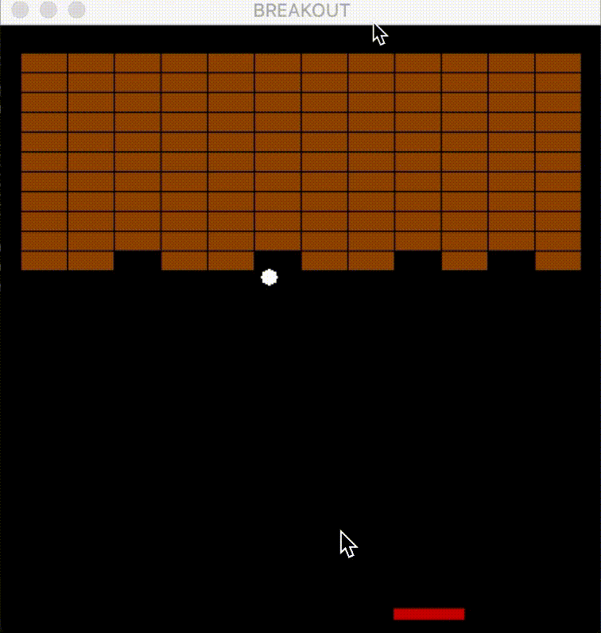

Project Overview
The major goals for this project are:
- Implementing a Monte Carlo-based reinforcement learning agent using a greedy epsilon strategy with a threshold of 0.5 to play a brick breaker game.
- Training the agent to maximize its reward by hitting bricks, tracking the ball, and ensuring the paddle bounces the ball effectively while avoiding game loss.
- Simulating the game environment with specific brick layouts, ball, and paddle movements, allowing the agent to learn from actions and observations during the game.
Technologies Used
- Python
- Monte Carlo Methods
- Greedy Epsilon Strategy
- Reinforcement Learning
- Pygame (for environment simulation)
Project Highlights
- Created an environment to simulate the brick breaker game with a paddle and ball, featuring specific brick layouts.
- Developed an agent that learns optimal gameplay strategies through trial and error, maximizing the reward by tracking the ball and hitting the bricks.
- Incorporated various aspects of the game, such as ball movement, paddle behavior, brick layout, and game state observation (e.g., X axis offset, paddle speed, and ball speed).
Future Scope
Future plans for this project include optimizing the agent's performance, improving the learning algorithm to handle different levels of difficulty, and adding new features like power-ups and enhanced collision effects.